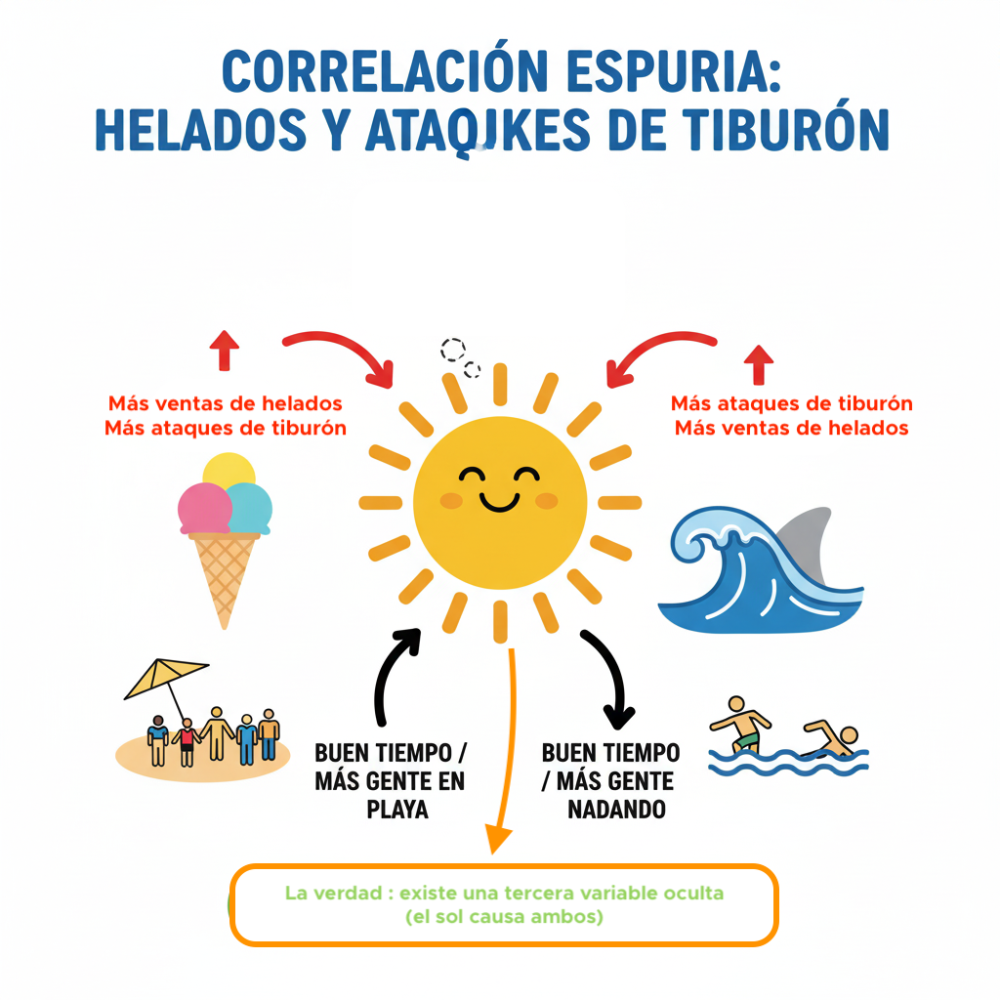
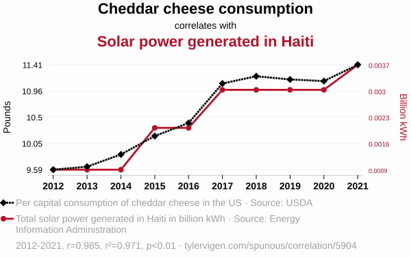
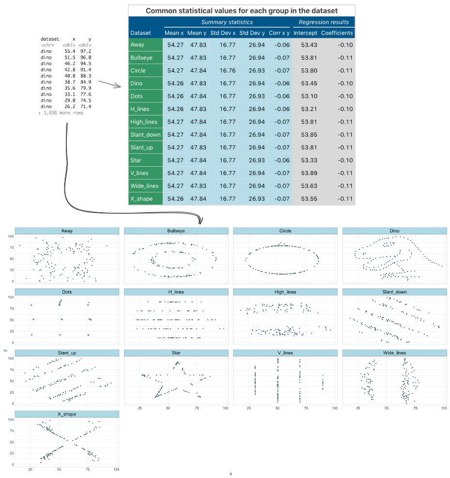

Correlacion vs. Causalidad
La regla de oro del analisis de datos: que dos variables se muevan juntas NO significa que una cause a la otra.
En la Unidad 2, fuimos detectives: usamos muestras para inferir verdades sobre la poblacion. Ahora evolucionamos a arquitectos de predicciones. Usaremos el dataset credit_risk_data.csv con informacion financiera de 1,000,000 de solicitantes de credito para construir modelos capaces de predecir su comportamiento futuro.
Correlacion NO implica Causalidad
Este es el error mas comun y peligroso en analisis de datos. Que dos variables fluctuen juntas solo describe una asociacion, no una relacion causa-efecto.
Correlacion
Medida estadistica que indica que dos variables fluctuan de manera conjunta. Si una sube, la otra tiende a subir (positiva) o a bajar (negativa). Simplemente describe una asociacion.
Causalidad
Un evento (la causa) produce directamente otro (el efecto). Establecer causalidad requiere un diseno experimental controlado, no solo datos observacionales.
Helados y Ataques de Tiburon
Imagina que analizas datos de una ciudad costera y descubres una fuerte correlacion positiva: los dias que se venden mas helados, tambien hay mas ataques de tiburon.
- Conclusion erronea (causalidad): "Comer helado provoca ataques de tiburon!"
- La verdad (correlacion espuria): Existe una tercera variable oculta, una variable de confusion: el buen tiempo (verano). Cuando hace calor, mas gente va a la playa (mas ataques) y mas gente compra helados.

Ilustracion: La variable oculta (el buen tiempo) causa ambos fenomenos.
Mas Ejemplos de Variables de Confusion
Este error no es solo teorico. En el mundo real, confundir correlacion con causalidad ha llevado a decisiones erroneas con consecuencias graves:
Haz click en cada tarjeta para revelar la variable de confusion oculta.
Epidemiologia: Cafe y Cancer de Pulmon
"Los bebedores de cafe tienen mayor tasa de cancer de pulmon."
¿El cafe causa cancer? 👉 Click para descubrir
❌ NO. La variable de confusion era el cigarrillo: los fumadores tambien tendian a beber mas cafe. Al controlar por tabaquismo, la correlacion desaparecia por completo.
Medicina: Hospitales y Mortalidad
"Los hospitales mas grandes y prestigiosos reportan tasas de mortalidad mas altas."
¿Son peores hospitales? 👉 Click para descubrir
❌ NO. La variable de confusion es la gravedad del paciente: los casos mas criticos y complejos se derivan a los mejores hospitales, inflando su tasa de mortalidad.
Salud Publica: Bomberos e Incendios
"Cuantos mas bomberos se envian a un incendio, mayor es el dano registrado."
¿Los bomberos causan dano? 👉 Click para descubrir
❌ NO. La variable de confusion: la magnitud del incendio. Incendios grandes requieren mas bomberos Y causan mas dano. Los bomberos no causan nada.
Negocios: Zapatos y Dolor de Cabeza
"Las personas que duermen con zapatos tienen mayor probabilidad de despertar con dolor de cabeza."
¿Los zapatos causan migranas? 👉 Click para descubrir
❌ NO. La variable de confusion: haber bebido alcohol la noche anterior. Quien bebe mucho se queda dormido sin quitarse los zapatos Y despierta con resaca.
Leccion para el Data Scientist
Antes de concluir que X causa Y, siempre preguntate: ¿Existe una tercera variable Z que podria estar causando ambas? En nuestro dataset de credito, si vemos que clientes de mayor edad tienen mas prestamos, podria ser porque tambien tienen mayores ingresos (la variable de confusion).
Correlaciones Espurias: Cuando los Datos Mienten
Tyler Vigen recopilo cientos de ejemplos absurdos de correlaciones altisimas entre variables que no tienen absolutamente nada que ver. Son la prueba definitiva de que correlacion no implica causalidad:

El consumo per capita de margarina correlaciona con la tasa de divorcios en Maine (r = 0.99). ¿La margarina destruye matrimonios? Obviamente no.

Consumo de queso cheddar vs energia solar generada en Haiti. ¿El queso alimenta paneles solares? Absurdo, pero r es altisimo.
El Datasaurus Dozen: ¿Por que SIEMPRE debes graficar tus datos?
Este es uno de los ejemplos mas famosos de la estadistica moderna. El Datasaurus Dozen son 13 datasets completamente diferentes — un dinosaurio, una estrella, un circulo, lineas, una X — que comparten exactamente las mismas estadisticas:
- Misma media de X (54.26) y de Y (47.83)
- Misma desviacion estandar de X (16.77) y de Y (26.94)
- Misma correlacion de Pearson (r = -0.06)
Si solo miraras los numeros, pensarias que son el mismo dataset. Pero al graficarlos...

Datasaurus Dozen — 13 datasets con estadisticas identicas (media, desviacion, correlacion) pero patrones completamente diferentes. Fuente: Matejka & Fitzmaurice (2017), Autodesk Research.
Leccion fundamental
Nunca confies solo en las estadisticas resumidas. Siempre visualiza tus datos antes de modelar. Un coeficiente de correlacion puede ocultar patrones que un simple diagrama de dispersion revela al instante.
Nuestro Dataset: credit_risk_data.csv
A lo largo de esta unidad trabajaremos con este dataset de 1,000,000 de registros:
Descargar credit_risk_data.csv (69 MB)| Variable | Tipo | Descripcion |
|---|---|---|
id_cliente | Identificador | ID unico del cliente |
nombre, apellido | Texto | Datos personales del cliente |
edad | Numerica | Edad del solicitante (media: 33.4) |
ingresos_anuales | Numerica | Ingresos anuales en COP (media: ~$50.8M) |
monto_prestamo | Numerica | Monto del prestamo solicitado |
puntaje_credito | Numerica | Score crediticio (media: 648.7) |
proposito_prestamo | Categorica | Personal, Coche, Vivienda, Educacion, Negocio |
estado_pago | Categorica | Pagado (~73%) / No Pagado (~27%) |
Mini-Trivia: Correlacion vs Causalidad
0/3Coeficiente de Pearson (r)
Midiendo la fuerza y direccion de la relacion lineal entre dos variables.
El Coeficiente de Correlacion de Pearson, denotado como r, es la herramienta mas comun para medir la fuerza y direccion de una relacion lineal entre dos variables cuantitativas. Es un numero que va de -1 a +1.
r = +1
Correlacion positiva perfecta. Todos los puntos en una linea ascendente.
r = 0
Sin correlacion lineal. Los puntos forman una nube sin patron.
r = -1
Correlacion negativa perfecta. Todos los puntos en una linea descendente.
Guia de Interpretacion de la Fuerza
| Valor de |r| | Interpretacion |
|---|---|
0.0 a 0.3 | Correlacion debil |
0.3 a 0.7 | Correlacion moderada |
0.7 a 1.0 | Correlacion fuerte |
Ingresos Anuales vs Monto del Prestamo
Al analizar la relacion entre ingresos_anuales y monto_prestamo en nuestro dataset de 1 millon de registros, el calculo del coeficiente de Pearson arroja r = 0.775. Esto confirma una asociacion lineal positiva fuerte: a mayores ingresos, mayor es el monto del prestamo que solicitan los clientes.
Simulador: Explorador de Correlacion
Ajusta el valor de r y observa como cambia la dispersion de los puntos.
Regresion Lineal Simple & Minimos Cuadrados (OLS)
Nuestro primer modelo predictivo: una linea recta que traza el futuro.
Un modelo predictivo es, en esencia, un mapa simplificado de la realidad. No es el territorio real (que es infinitamente complejo), pero si el mapa es bueno, nos ayuda a navegar y a predecir que encontraremos mas adelante. Pasamos de describir el pasado (analitica descriptiva) a predecir el futuro (analitica predictiva).
Video: ¿Que es un Modelo? | DotCSV
Antes de construir nuestro primer modelo, es fundamental entender que es un modelo y por que es tan poderoso. Este video explica como los modelos simplifican la realidad, el equilibrio entre precision y simplicidad, y los tres pilares del Machine Learning: datos, parametros y error.
Variable Dependiente (Y)
Lo que queremos predecir. Es nuestro objetivo. En nuestro caso: monto_prestamo.
Variable Independiente (X)
Lo que usamos como "pista" para predecir Y. Nuestro predictor: ingresos_anuales.
La Ecuacion del Modelo
β₀ (Intercepto)
El "punto de partida". Valor estimado de Y cuando X es cero. Posiciona la linea correctamente en el espacio.
β₁ (Pendiente)
El corazon del modelo. Nos dice cuanto cambia Y por cada unidad de aumento en X. Es el "efecto" cuantificado.
ε (Error / Residuo)
Representa todo lo que nuestro modelo no puede capturar: la aleatoriedad inherente, errores de medicion y el efecto de todas las demas variables que no hemos incluido. Es la distancia vertical entre un punto real y la linea.
Video: Regresion Lineal y Minimos Cuadrados Ordinarios | DotCSV
Este video explica visualmente como funciona la regresion lineal: desde trazar una linea que captura la tendencia de los datos, hasta el metodo de Minimos Cuadrados Ordinarios (MCO) que encuentra los parametros optimos minimizando el error cuadratico, y el Descenso del Gradiente como alternativa iterativa.
Minimos Cuadrados Ordinarios (OLS)
En un diagrama de dispersion, podriamos dibujar infinitas lineas rectas. OLS encuentra la linea que hace que la suma de las distancias al cuadrado (los residuos²) sea lo mas pequena posible.
Analogia de los Resortes
Imagina que cada punto de dato esta conectado a la linea por un resorte vertical. OLS elige la linea que minimiza la energia total de los resortes (la suma de los cuadrados de sus longitudes). Se elevan al cuadrado para que errores positivos y negativos no se cancelen y para penalizar mas los errores grandes.
Simulador: Minimos Cuadrados Ordinarios (OLS)
Genera datos, mira la linea de mejor ajuste y los residuos al cuadrado en tiempo real.
Mini-Trivia: Regresion Lineal & OLS
0/3Desafio: ¿Puedes encontrar la mejor linea?
Ajusta manualmente β₀ (intercepto) y β₁ (pendiente). Los cuadrados rosados muestran el error de cada punto. Tu meta: minimizar el MSE.
Construccion e Interpretacion del Modelo en Python
Pregunta de Negocio: ¿Podemos predecir el monto_prestamo que solicitara un cliente si conocemos sus ingresos_anuales?
Antes de modelar, debemos cargar los datos, importar las librerias y explorar el dataset. Pero primero, conozcamos la herramienta estrella que usaremos de aqui en adelante.
Scikit-learn: La Navaja Suiza del Machine Learning
sklearn · Codigo abierto · La libreria mas usada en la industriaScikit-learn (o sklearn) es la biblioteca de Python mas popular para Machine Learning. Es como tener una caja de herramientas completa donde cada modelo —regresion, clasificacion, clustering— se usa con la misma interfaz simple:
Paso 1: Importar las Librerias
sklearn viene preinstalado en Databricks, Colab y Kaggle
A diferencia de otras librerias, no necesitas instalar nada extra. Solo haz import y listo. Si por alguna razon no esta disponible: %pip install scikit-learn
Paso 2: Cargar los Datos
Paso 3: Explorar el Dataset
Paso 4: Limpieza y Preparacion
Paso 5: Visualizacion Exploratoria
Datos listos!
Ahora que tenemos los datos cargados, limpios y explorados, podemos construir nuestro primer modelo con scikit-learn. Recuerda el patron: crear → fit → predict.
Paso 6: Construir el Modelo de Regresion Simple
¿Notaste la diferencia?
Con sklearn no necesitas agregar una constante manualmente (como en statsmodels con sm.add_constant). El intercepto se calcula automaticamente. Ademas, usamos doble corchete df[['columna']] porque sklearn espera una matriz 2D, no una serie 1D.
Salida Esperada
Analisis de los Resultados
R² = 0.601
El 60.1% de la variabilidad en el monto_prestamo es explicada por los ingresos_anuales. Para un modelo de una sola variable, es un poder predictivo solido.
modelo.score(X, Y)
En sklearn, el metodo .score() calcula el R² automaticamente. Cuanto mas cercano a 1, mejor el modelo.
Coeficientes del Modelo
- modelo.intercept_ (β₀) = -$66,756 COP: El intercepto (monto base cuando ingresos son cero). No tiene interpretacion practica aqui, pero es necesario matematicamente para posicionar la linea.
- modelo.coef_[0] (β₁) = 0.4268: "Por cada peso adicional de ingresos anuales, esperamos que el monto del prestamo solicitado aumente, en promedio, en $0.43 COP." O visto de otra forma: por cada $1,000,000 mas de ingreso, el prestamo sube ~$427,000.
Paso 7: Hacer Predicciones
La verdadera utilidad del modelo: predecir para nuevos datos.
Regresion Lineal Multiple
De un GPS con una sola ruta a uno que considera multiples factores simultaneamente.
La regresion simple usa una sola variable. Pero la realidad es mucho mas compleja. La regresion lineal multiple incluye multiples variables predictoras, creando un "mapa de la realidad" mucho mas rico y preciso.
Ceteris Paribus: "Manteniendo todo lo demas constante"
En la regresion multiple, cada β representa el efecto de una variable sobre Y, manteniendo constantes todas las demas variables del modelo. Esta es la clave de la interpretacion.
Modelando el Puntaje de Credito
Pregunta de Negocio: ¿Podemos modelar el monto_prestamo de un cliente a partir de sus ingresos_anuales, su puntaje_credito y su edad?
Interpretacion de Coeficientes
- ingresos_anuales (0.4268): "Manteniendo puntaje y edad constantes, por cada peso adicional en ingresos, el monto del prestamo sube ~$0.43." Es el predictor mas fuerte dado la alta correlacion (r = 0.775).
- puntaje_credito (-386.34): "Manteniendo ingresos y edad constantes, cada punto adicional en el puntaje reduce el monto solicitado en $386 COP." Un efecto leve.
- edad (2,805.28): "Manteniendo lo demas constante, cada ano adicional de edad aumenta el prestamo en ~$2,805 COP." Un efecto marginal.
Metricas de Evaluacion y Diagnostico
Construir un modelo es solo el primer paso. Necesitamos metricas objetivas para saber si es bueno.
R² (R-cuadrado)
Mide que porcentaje de la variabilidad en Y es explicado por el modelo. De 0 a 1. Problema: siempre sube al anadir variables, aunque sean inutiles.
R² Ajustado
Version "inteligente" del R². Penaliza al modelo por incluir variables que no aportan. Regla de oro: siempre usar R² Ajustado al comparar modelos.
RMSE
Root Mean Squared Error. Se expresa en las mismas unidades que Y. Nos dice el "error tipico" de prediccion. Menor es mejor.
Interpretacion del RMSE
Un RMSE de $14,100,000 COP significa: "En promedio, las predicciones de nuestro modelo sobre el monto_prestamo se desvian unos 14.1 millones del valor real." Dado que los prestamos promedian ~$21.6M, este error es considerable pero esperable con tan pocas variables.
Los Supuestos LINE
Para que podamos confiar en los resultados de una regresion lineal, el modelo debe cumplir cuatro supuestos clave:
L - Linealidad
La relacion entre X e Y debe ser lineal. Si la relacion es curva, el modelo lineal falla.
I - Independencia
Los errores (residuos) deben ser independientes entre si. No debe haber patrones como la "autocorrelacion".
N - Normalidad
Los errores deben seguir una distribucion normal. Se verifica con el grafico Q-Q.
E - Equal Variance
Homocedasticidad: La varianza de los errores debe ser constante. Lo contrario es heterocedasticidad.
Mini-Trivia: Metricas y Diagnostico
0/3Modelos de Clasificacion: Regresion Logistica
De predecir "cuanto" a predecir "cual". Entramos al mundo de la clasificacion.
Hasta ahora, nuestros modelos predecian una cantidad numerica. Ahora, la pregunta ya no es "cuanto", sino "¿cual?". Nos adentramos en el mundo de la clasificacion:
¿Por que NO usar regresion lineal?
Predicciones sin sentido: Una linea recta no tiene limites. Produciria predicciones como 1.5 o -0.2. ¿Que significa una probabilidad del 150%? Nada.
La Solucion: Funcion Sigmoide
La regresion logistica usa una curva en forma de "S" que "aplasta" cualquier numero para que caiga siempre entre 0 y 1. Perfecta para probabilidades.
El Motor Interno: La Transformacion Logit
- Probabilidad (P): Chance de que un evento ocurra (ej. 0.8, o 80%).
- Odds: P / (1 - P). Si P=0.8, los Odds son 0.8/0.2 = 4. (4 veces mas probable que ocurra a que no.)
- Log-Odds (Logit): ln(Odds). La regresion logistica modela una relacion lineal entre X y el logit de Y.
La Funcion Sigmoide y el Umbral de Decision
Convirtiendo numeros en probabilidades y probabilidades en decisiones.
Simulador: Funcion Sigmoide Interactiva
Mueve el slider de z y observa como la sigmoide transforma cualquier valor en una probabilidad entre 0 y 1.
El Umbral de Decision
La sigmoide nos da una probabilidad. Pero necesitamos una decision: ¿Pagara o No Pagara? El umbral (por defecto 0.5) define el punto de corte. Si la probabilidad ≥ umbral → "No Pagado" (riesgo). Ajustar este umbral tiene consecuencias directas en precision y recall.
Mini-Trivia: Sigmoide y Logistica
0/3Modelo Logistico en Python y Matriz de Confusion
Construimos el modelo, evaluamos su rendimiento y aprendemos a leer el "marcador del partido".
Novedad: train_test_split
A diferencia de la regresion lineal, aqui dividimos los datos en entrenamiento (80%) y prueba (20%). Esto es crucial para evaluar si el modelo generaliza bien a datos que nunca ha visto. Es una practica estandar en ML.
Odds Ratios — Interpretacion de Coeficientes
Los coeficientes se interpretan como Odds Ratios (OR), calculados como ecoeficiente:
- puntaje_credito (OR ≈ 0.988): "Por cada punto adicional en puntaje_credito, los 'odds' de no pagar disminuyen un 1.2%. Es un factor protector."
- dti_ratio (OR ≈ 1,625): "Un aumento de una unidad en el dti_ratio incrementa los odds de no pago en 1,625 veces. Es el predictor de riesgo mas fuerte del modelo."
- edad (OR ≈ 0.998): El efecto es practicamente nulo. La edad casi no influye en la probabilidad de impago.
La Matriz de Confusion: El Marcador del Partido
Verdaderos Positivos (VP)
Predijo 'No Pagado', y el cliente realmente no pago. (Acierto clave)
Verdaderos Negativos (VN)
Predijo 'Pagado', y el cliente realmente pago.
Falsos Positivos (FP)
Predijo 'No Pagado', pero el cliente si habria pagado. (Perdida de oportunidad)
Falsos Negativos (FN)
Predijo 'Pagado', pero el cliente no pago. (El error mas costoso!)
Simulador: Umbral y Matriz de Confusion
Ajusta el umbral de decision y observa como cambian las metricas de clasificacion en tiempo real.
Accuracy puede ser enganosa
Con datos desbalanceados (la mayoria paga), un modelo que siempre diga "Pagado" tendria un accuracy del 80%+, pero seria completamente inutil. Por eso el Recall para la clase minoritaria ("No Pagado") es la metrica clave en este negocio.
Mini-Trivia: Clasificacion y Metricas
0/3Arboles de Decision y Random Forest
De lineas rectas a arboles que toman decisiones como un humano experto.
La regresion lineal y logistica son herramientas poderosas, pero tienen limitaciones: asumen relaciones lineales. En el mundo real, las relaciones pueden ser mucho mas complejas. Los modelos de Machine Learning van mas alla.
Arbol de Decision
Un arbol de decision toma decisiones como un humano: haciendo preguntas secuenciales tipo "si/no" sobre los datos.
El Juego de las 20 Preguntas
Imagina que eres un oficial de credito y debes decidir si aprobar un prestamo. Tu proceso mental seria algo asi:
- ¿El puntaje de credito es mayor a 600? → Si: probablemente aprobado
- ¿El DTI ratio es menor a 0.5? → Si: menos riesgo
- ¿Tiene mas de 5 anos de experiencia? → Si: aprobar
Un arbol de decision automatiza exactamente este proceso, encontrando las mejores preguntas y los mejores puntos de corte.
Ventajas
- Facil de interpretar y visualizar
- No requiere normalizar datos
- Captura relaciones no lineales
- Maneja variables categoricas y numericas
Desventajas
- Overfitting: Tiende a memorizar los datos de entrenamiento
- Inestable: pequenos cambios en datos producen arboles muy diferentes
- Rendimiento limitado frente a modelos mas sofisticados
Random Forest: La Sabiduria de la Multitud
Si un arbol puede equivocarse, ¿que pasa si consultamos a cientos de arboles y dejamos que voten? Eso es exactamente Random Forest.
Analogia: El Jurado
Un solo juez puede equivocarse, pero 500 jueces votando en conjunto tienen mucha mayor probabilidad de acertar. Random Forest entrena cientos de arboles, cada uno con una muestra aleatoria de datos y variables, y la prediccion final es el voto de la mayoria.
KNN, SVM y Gradient Boosting
Un arsenal completo de algoritmos para atacar cualquier problema de prediccion.
K-Nearest Neighbors (KNN)
Analogia: "Dime con quien andas y te dire quien eres." KNN clasifica un nuevo punto mirando a sus K vecinos mas cercanos y asignandole la clase mayoritaria entre ellos.
- K pequeno (ej. 1-3): Muy sensible al ruido, puede hacer overfitting
- K grande (ej. 50+): Demasiado suave, puede perder patrones locales
- Requiere: Normalizar las variables para que la "distancia" sea justa
Support Vector Machine (SVM)
Analogia: Imagina que tienes puntos rojos y azules en una mesa. SVM busca la linea (o hiperplano) que los separa con el mayor margen posible. La linea no solo separa, sino que maximiza la distancia a los puntos mas cercanos de cada clase (los "vectores de soporte").
- Kernel trick: Puede encontrar fronteras de decision curvas y complejas
- Efectivo en espacios de alta dimension
- Lento con datasets muy grandes (>10K registros)
Gradient Boosting (XGBoost / LightGBM)
Analogia: Si Random Forest es un jurado que vota en paralelo, Gradient Boosting es un equipo de tutores: cada nuevo arbol se enfoca especificamente en corregir los errores del arbol anterior. Es un proceso iterativo de mejora continua.
- XGBoost: La herramienta mas ganadora en competencias de data science (Kaggle)
- Rendimiento: Generalmente el mejor en datos tabulares (como nuestro dataset)
- Riesgo: Facil de hacer overfit si no se regularizan los hiperparametros
Tabla Comparativa de Modelos
| Modelo | Tipo | Fortaleza | Debilidad |
|---|---|---|---|
| Reg. Logistica | Lineal | Interpretable, rapido | Solo fronteras lineales |
| Arbol de Decision | No lineal | Interpretable, visual | Overfitting facil |
| Random Forest | Ensemble | Robusto, preciso | Dificil de interpretar |
| KNN | Basado en instancias | Simple, sin supuestos | Lento con muchos datos |
| SVM | Basado en margen | Efectivo en alta dim. | Lento, dificil de tunear |
| Gradient Boosting | Ensemble secuencial | Mejor rendimiento tipico | Overfitting si no se regula |
Mini-Trivia: Modelos de Machine Learning
0/3La Neurona Artificial: El Bloque Fundamental
Todo comienza con una sola neurona que imita (de forma simplificada) lo que hace una neurona biologica.
Una red neuronal es, en su esencia, una extension sofisticada de la regresion logistica. Todo comienza con un bloque fundamental: el perceptron (neurona artificial).
Como Funciona una Neurona Artificial
- Recibe entradas (x₁, x₂, ...) — Como los predictores de una regresion.
- Multiplica cada entrada por un peso (w₁, w₂, ...) — Como los coeficientes β.
- Suma todo y agrega un sesgo (bias) — z = w₁x₁ + w₂x₂ + b
- Aplica una funcion de activacion — Como la sigmoide, transforma z en una salida util.
Simulador: Perceptron Interactivo
Ajusta los pesos, el sesgo y las entradas. Observa como la neurona procesa la informacion.
Funciones de Activacion Populares
Sigmoide: Salida entre 0 y 1 (buena para la capa final en clasificacion binaria). ReLU: max(0, z) — la mas usada en capas ocultas por su simplicidad y eficiencia. Softmax: Para clasificacion multiclase (distribuye probabilidades entre N clases).
Redes Multicapa y Deep Learning
Apilando neuronas para resolver problemas que ningun modelo lineal podria.
Una sola neurona es basicamente una regresion logistica. El poder real aparece cuando apilamos cientos o miles de neuronas en capas. Esto es una Red Neuronal Profunda (Deep Learning).
Capa de Entrada
Recibe los datos crudos. Una neurona por cada feature (ej. puntaje_credito, dti_ratio, edad).
Capas Ocultas
Donde ocurre la "magia". Cada capa aprende representaciones cada vez mas abstractas y complejas de los datos.
Capa de Salida
Produce la prediccion final. 1 neurona con sigmoide para binario, N neuronas con softmax para multiclase.
Backpropagation: Como Aprende una Red
Analogia: El Juego del Telefono Roto (pero al reves)
Imagina que la red hace una prediccion y se equivoca. El error se propaga hacia atras por toda la red, y cada neurona ajusta sus pesos un poquito para reducir ese error. Esto se repite miles de veces (epocas) hasta que la red aprende. Es como un estudiante que revisa sus examenes, identifica errores y mejora gradualmente.
¿Cuando NO usar Deep Learning?
Para datos tabulares como nuestro credit_risk_data.csv, modelos como Gradient Boosting suelen superar a las redes neuronales. Deep Learning brilla con imagenes, texto, audio y datos no estructurados. Para tablas: prueba primero XGBoost/LightGBM.
Mini-Trivia: Redes Neuronales
0/3Trivia Final: Analitica Predictiva & ML
Pon a prueba todo lo que aprendiste en esta unidad.
Trivia Final — Todo lo Aprendido
0/3Recursos Complementarios
- Video: Regresion Lineal y Minimos Cuadrados Ordinarios | DotCSV
- Video: Modelos para entender una realidad caotica | DotCSV
- Video: ¿Que es una Red Neuronal? Parte 1: La Neurona | DotCSV
- Recurso interactivo: MLU-Explain (Amazon) — Explicaciones visuales e interactivas de conceptos de Machine Learning: regresion lineal, arboles de decision, bias-variance, ROC/AUC y mas.